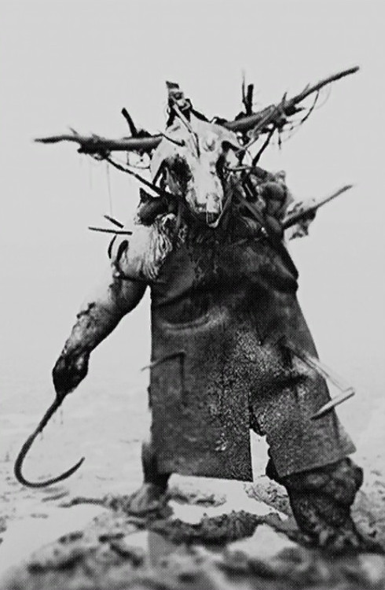
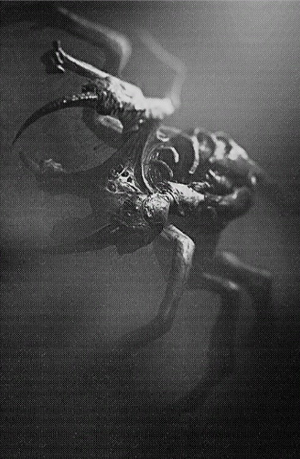
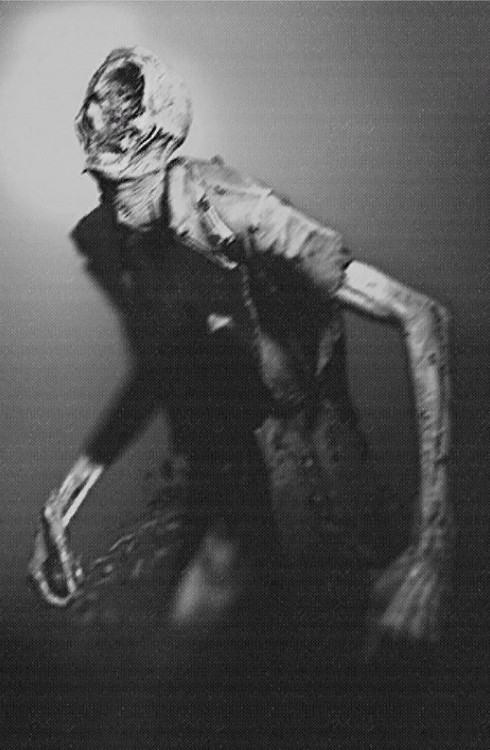
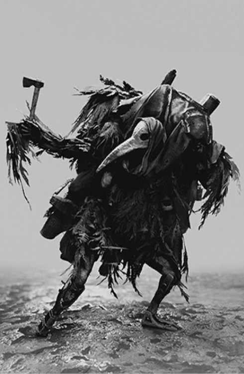
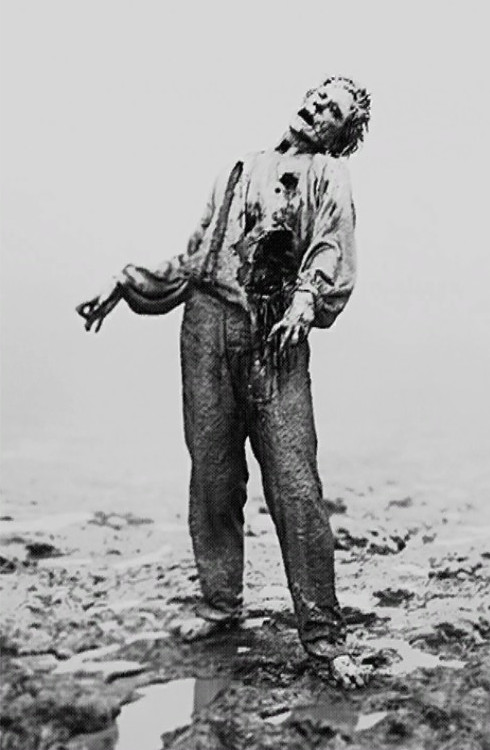
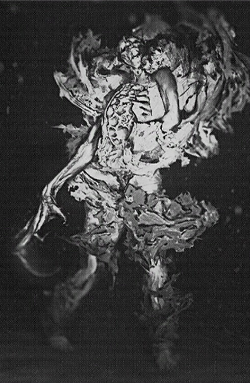
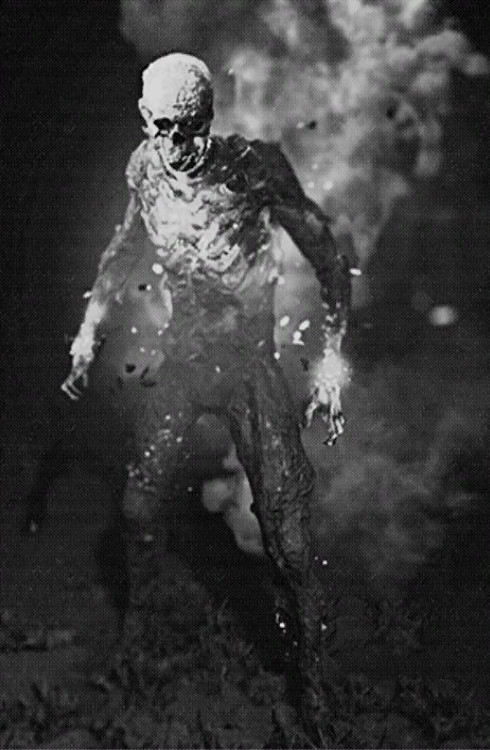
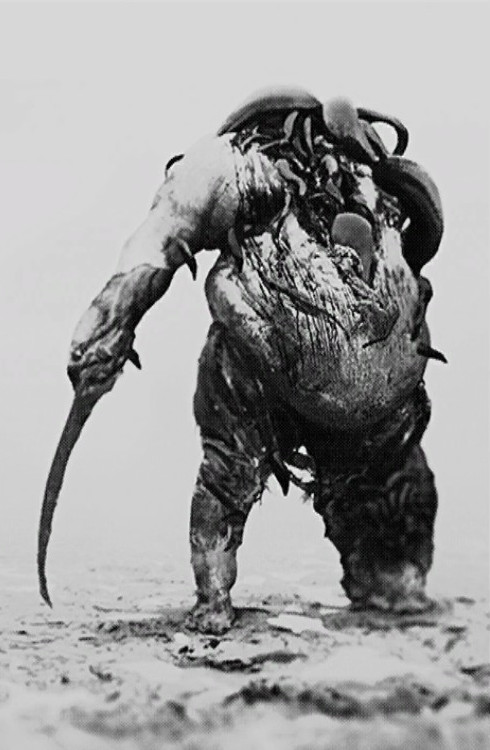
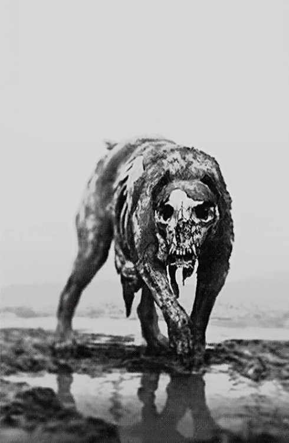
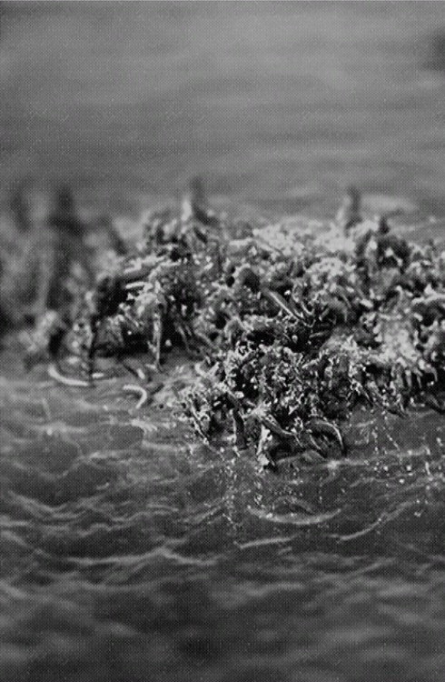

Les différents enemmis du jeu
-
Les boss
Le boucher :
|  |
extrait des recherches sur Bec-ordure
Non daté
La documentation n'est manifestement pas fiable. Au fur et à mesure que nous reconstituons le puzzle, nous sommes obligés de faire de nombreux sauts de logique et de foi. Les incohérences ne sont pas tout à fait surprenantes compte tenu des sources et de la subjectivité de l'expérience remémorée. La vue d'ensemble a un certain sens, suit sa propre logique interne. Malgré cela, même moi j'ai du mal à croire ce que j'ai trouvé concernant sa première apparition en Louisiane.
L'énorme corps gonflé - clairement un parent du Meathead - avec des morceaux de bois et de métal dépassant de la peau. Un tablier de cuir recouvre les horreurs de son torse, la tête d'un cochon, et - et c'est en quelque sorte le détail que j'ai le plus de mal à croire - un crochet enflammé. Il est à l'aise avec le feu et résistant à la chaleur - probablement en partie grâce au tablier - et au matraquage. Une éponge à balles ordinaire, et bien que plus faillible aux attaques déchirantes, il m'est difficile d'imaginer comment ces personnes ont réussi à tuer l'un d'entre eux. Lorsqu'il était poussé dans une fureur violente, son comportement devenait erratique et des flammes s'envolaient du crochet susmentionné. Je frémis de penser. Qu'est-ce que cela a dû faire de tourner dans un coin sombre et de se retrouver face à face avec les yeux vides et le crochet brillant de cette bête apparemment impossible?
Si les rapports peuvent être crus, ces bouchers, comme les appelaient ceux qui les chassaient, étaient l'étoffe des cauchemars. Soit cela, soit seuls les contes les plus fantastiques ont survécu. Peut-on vraiment séparer les faits des fictions à cette distance ? Peut-être pas, mais je suis déterminé à continuer d'essayer, même si je ne peux jamais être sûr de la vérité. |
L'araignée :
|  |
extrait des recherches sur Bec-ordure
Non daté
Plus de personnes que vous ne le pensez souffrent d'arachnophobie. Une peur primale de quelque chose de venimeux qui se cache, tissant des pièges, capable d'escalader n'importe quelle surface. En contradiction, cependant, avec sa fonction domestique : maintenir une habitation à l'abri des mouches et autres créatures indésirables. Une araignée de la taille d'un quart, cependant, est gérable. Mais, à la taille d'un cheval, même les plus rationnels et les plus logiques reculeraient de dégoût devant un arachnide à huit pattes, grinçant ses mandibules, expulsant des bobines de toile. de l'hystérie qui s'emparait tant des bayous. Un exemple, cependant, qui, dans toutes ses dimensions à multiples facettes et ses itérations exhaustives, justifie cette hystérie.
Des références continuent de surgir dans les archives, de quelque chose de pas tout à fait humain et pas tout à fait d'araignée, une masse semi-sensible de membres, toxique à la fois dans le corps et dans l'intention.
Les chasseurs étaient pragmatiques, on peut en dire autant. La plupart des informations conservées concernaient la manière de combattre une telle bête. Il a frappé fort, puis s'est retiré dans l'ombre pour préparer son prochain assaut. Il a été conseillé aux chasseurs de continuer à bouger, car l'araignée pouvait apparemment cracher du poison, qui s'est attardé quelque temps après dans les airs.
Les armes de mêlée, qui pouvaient couper ou frapper, se sont avérées efficaces pour déchirer ses membres et briser ses os. Le poison et les autres toxines étaient inefficaces.
Je suis sûr qu'une étude plus pointilleuse du texte source révélerait sans doute plus d'idées.
Les meilleures sources avec lesquelles j'ai trouvé de travailler étaient des interviews données par la notoire JV. Une description physique détaillée, et au moins une référence à Black et Scognamiglio (ce dernier était étrangement silencieux sur le sujet dans ses propres écrits). Quelques pages manquantes, bien que les plus pertinentes soient reproduites ici.
Ce que l'on sait cependant, c'est que cette araignée était l'une des plus grandes possessions du plus grand mal qui s'y cachait. D'autant plus qu'on pourra en découvrir, plus on verra clairement le tableau dans son ensemble. |
L'assassin :
|  |
extrait des recherches sur Bec-ordure
Non daté
L'arrivée de l'Assassin marque un tournant surprenant dans l'affaire de la Louisiane. Avant son arrivée, les principaux aspects de l'entité étaient certainement de redoutables combattants, bien que conçus à d'autres fins. L'Assassin humanoïde semblait spécialement conçu pour choquer les humains et les détruire.
Les récits d'une telle créature sont similaires : celui d'une grande figure humanoïde qui peut apparemment se fondre en un essaim d'insectes. Que ce soit ou non le résultat d'une ruse ou d'une transformation physique réelle, est discutable. Bien qu'avec tout ce qui concerne ce cas, je suis enclin à croire aux théorisations les plus farfelues et bizarres un jour, et incrédule le lendemain.
De cela, j'ai noté un modèle remarquable dans son comportement. L'Assassin semblait capable d'exploits remarquables. La principale d'entre elles est la capacité de se scinder en plusieurs (trois) manifestations d'elle-même. Ces manifestations fonctionneraient comme une distraction, attaquant les chasseurs indépendamment, tandis que le véritable Assassin profiterait de l'occasion pour trouver le bon moment pour frapper.
Heureusement, Harold Black a conservé une grande partie de ce que nous savons. Sa rencontre avec l'Assassin semble avoir fait de lui l'homme que nous vénérons aujourd'hui.
Son récit, à la manière typiquement blackienne, semble indirect selon les normes académiques modernes. En effet, il mentionne sa carrière ratée d'écrivain, et son incapacité à informer semble clairement l'affirmer.
Cependant, cela donne un aperçu rare des capacités de l'assassin, en particulier de leur développement à partir d'un hôte humain. Vous seriez pardonné de manquer certaines des informations les plus pragmatiques, telles que le fait que le coffre de l'Assassin semble abriter un point vulnérable. |
Bec-ordure :
|  |
extrait des recherches sur Bec-ordure
Non daté
La question du bec est primordiale. Au départ, j'avais supposé qu'il s'agissait d'un masque, façonné à partir des détritus récupérés auxquels la créature est si chère, une théorie étayée par le fait que la composition du bec ne ressemble à celle d'aucun oiseau encore catalogué par l'homme. Cependant, la dissection révèle que la périphérie de la structure du bec est fusionnée avec l'os du crâne, bien que les mandibules et la musculature environnante soient curieusement positionnées, non fonctionnelles et présentent de nombreuses cicatrices. Le tissu cicatriciel est singulier, présentant des attributs de tissu chéloïde et hypertrophique, et marqué de manière à suggérer un processus de guérison violemment accéléré.
De cela, je dois conclure que le bec ne faisait pas partie de la physionomie originale de la bête, mais plutôt un ajout plus récent - un ajout qui n'aurait pu être fait que par une intervention chirurgicale des plus horribles - et que le processus de guérison a été accéléré et déformé par le processus de transformation dont je sais encore, de manière exaspérante, si peu. Je frémis d'y penser, car je ne peux imaginer aucune circonstance dans laquelle un homme pourrait accepter, de son plein gré, de permettre qu'une telle opération ait lieu, ou le médecin désireux de l'effectuer. Trouver ce médecin - peut-être sous l'influence de la corruption elle-même - donnerait un aperçu des plus précieux sur cette créature. Peut-être que le Sculpteur n'est pas, finalement, l'être le plus flagrant du Bayou |
-
Les infectés
Les goules :
|  |
extrait des recherches sur Bec-ordure
Non daté
Il est assez difficile d'effectuer une analyse typologique de cet incident de Louisiane . Je commence à penser que ces événements ont peut-être été le début des histoires de zombies que nous avons aujourd'hui. Cela correspond certainement au modèle : une sorte d'infection mortelle frappe une colonie, anéantit presque toute la population, puis les morts sortent de leurs tombes pour se régaler des vivants. Bien que ce soit la seule histoire de zombies que j'ai entendue où les zombies prennent des armes - des torches et des lames dans la plupart des cas - pour les brandir contre les vivants. Le vieil adage tient : la vérité est toujours bien plus étrange que la fiction.
Il semble que les chasseurs de cette époque les appelaient simplement Grunts. Il y a bien sûr des rapports contradictoires, mais le matériel que j'ai trouvé jusqu'à présent semble parler de ce qui est probablement une créature lente et principalement humaine, peut-être victime d'une infection virale, ou contrôlée par une sorte d'esprit supérieur ou Loa .
Alors que parfois je semble saisir des pailles pour identifier certains des monstres les plus spécialisés dans les textes sources, les Grunts sont omniprésents, c'est le moins qu'on puisse dire. D'une valeur particulière, une autopsie réalisée et récupérée presque intégralement du journal du Dr Reinhard Winkler que j'ai inclus dans les archives.
Selon les rapports, vous pourriez rapidement envoyer un Grunt rapidement avec un tir à la tête bien placé. Je ne voudrais toujours pas en rencontrer un dans le noir. Et certainement pas en nombre. |
-
Les élus
Le cuirassé :
|  |
extrait des recherches sur Bec-ordure
Non daté
J'ai utilisé les travaux de Scognamiglio lui-même pour illustrer l'analyse complète de l'Armored, un plaisir rare car si peu ont survécu. Une analyse plus physique est disponible auprès de Harold Black. Il suit :
L'Armored, son nom s'est révélé remarquablement ambigu. Certains invoquent une figure défensive, prête à se replier dans sa carapace. Cela ne pourrait pas être plus éloigné de la vérité apparente, car de nombreux récits suggèrent le contraire. Une créature bien protégée, capable de mener des offensives dangereuses. Une troupe de choc; avec plus de mobilité, et donc de flexibilité, que le gigantesque Meathead.
Pour paraphraser George Washington, « les opérations offensives sont le moyen de défense le plus sûr ». Ainsi, ce spécimen est apparemment équipé pour poursuivre sans relâche ses cibles, à l'abri de leurs tirs de représailles. Un récit le cite assez intelligent pour défoncer les portes, bien que cela ne puisse pas être vérifié.
Alors, que protège son armure ? Un imbécile se penserait. Non. Encore et encore, ces ennemis sont rencontrés à proximité des failles, ces endroits apparemment vulnérables ou importants pour la bête. Ils se cachent derrière les portes, s'attardent sur les butées de porte : tous les points d'étranglement potentiels, tous les endroits vitaux à contrôler.
Le nom que lui donnaient les chasseurs était pragmatique ; ils n'ont pas touché à l'occultisme pour l'expliquer. Bien qu'il soit aussi certain que cette créature ait existé, aussi certain que les Grunts au moins, sa taxonomie est indéterminée. Certains le considèrent comme un peu plus qu'un Grunt blindé, une mutation ayant épaissi la peau et développé un exosquelette chitineux. Je ne serais pas d'accord sur ce point, il est souvent noté que la coque de l'Armored est particulièrement inflammable et vulnérable à toutes sortes d'engins incendiaires.
D'autres, qui s'alignent peut-être plus étroitement sur mes propres croyances, y voient quelque chose de distinct à part entière. Qu'une telle mutation doit avoir un but plus significatif. |
La ruche :
 |
extrait des recherches sur Bec-ordure
Non daté
Parmi les dix créatures que j'ai étudiées jusqu'à présent, c'est la Ruche qui hante mes rêves. Bien qu'elle semble avoir été classée aux côtés des autres Grunts, elle était une créature beaucoup plus dangereuse, lançant un essaim d'insectes sur n'importe quel humain à portée jusqu'à ce que leurs corps soient perforés et enflés et soulevés de leur vil poison. Seule sa propre mort - la mort de leur hôte, la mère de la ruche - a arrêté leurs attaques persistantes. Bien qu'elle puisse être tuée de loin en toute sécurité avec une balle dans la tête, le positionnement de son corps rendait la tâche difficile même pour les meilleurs tireurs d'élite. Des dégâts contondants pourraient lui faire du mal, mais rien d'autre, et dans le temps qu'il aurait fallu pour essayer, ses essaims bestiaux auraient déjà piqué leur proie en fuite ou en soumission.
En regardant la situation dans son ensemble, j'essaie de comprendre à quoi servait chaque forme aux yeux de son créateur. Les documents que j'ai recueillis - en particulier les entretiens avec Ada Shell - m'ont conduit à émettre l'hypothèse que la fonction de la Ruche était à la fois d'héberger et de diffuser la maladie. Convertir ou tuer à distance ; perpétuer la "course". Je me souviens des écrits de Trask, actif à cette époque, qui était convaincu que la mission divine d'une femme était la "perpétuation de la race" par une reproduction continue. La graine de cette idée - aussi tordue soit-elle - a été personnifiée dans le premier Hive enregistré, comme vous le verrez. |
L'immolateur :
|  |
extrait des recherches sur Bec-ordure
Non daté
L'immolateur semble être le plus tourmenté de tous. Le moindre mouvement le met en rage, attaquant de manière chaotique, et lorsqu'il est touché, il brûle encore plus et charge comme un taureau en colère. Il est, bien sûr, éteint dans l'eau (et peut être fatalement consumé par ses propres flammes internes), mais sinon, représente l'exemple le plus intelligent que j'ai vu. La bête peut effectivement ouvrir des portes !
J'ai remarqué certains parallèles bibliques dans l'histoire qui - je crois - décrit la toute première occurrence. Les factions religieuses avaient-elles raison après tout ? Je me demande. Nous avons tous les deux supposé que le folklore n'était que cela : des traditions, des histoires effrayantes pour s'endormir. La vaine tentative d'un autre auteur d'imposer une signification humaine linéaire et compréhensible à un événement inexplicable. Et si cette fois, ils avaient raison ?
Les coups qui ont conduit à la transformation de Jeremy ont dû avoir lieu dans un endroit instable, mais il est peu probable que l'un des auteurs en ait été conscient. Un témoin a survécu et est répertorié comme ayant été admis à l'asile, diagnostiqué avec une manie religieuse et terrifié par les feux de l'enfer.
J'ai trouvé à la fois le journal de Clemens et une partie de la série référencée et j'ai ajouté les deux aux archives : cela constitue un récit épouventable. |
Le sac à viande :
|  |
extrait des recherches sur Bec-ordure
Non daté
Franchement, je ne sais pas du tout pourquoi ils ont qualifié cette chose de Meathead. La créature n'a pas de tête. Il pourrait être décrit comme un monstre humanoïde gonflé, sans tête. Plus facile à couper qu'à tirer ; un frappeur dur, mais trop bien isolé pour subir beaucoup de dégâts d'un poing ou d'un objet contondant. Il semble avoir une relation symbiotique avec les sangsues , bien que celles-ci ne soient pas non plus les créatures que vous pourriez reconnaître comme telles. Les sangsues semblent avoir agi comme les organes sensoriels de la créature, lui permettant de voir, de trouver une proie et d'affaiblir cette proie avec leurs propres morsures venimeuses. Ils sont une extension intelligente de la créature, font avancer les troupes en quelque sorte.
Scognamiglio , ce fou. Il les appelait Soul Farmers, mais je ne vois pas pourquoi. Il pensait qu'ils étaient essentiellement vampiriques, se nourrissant d'âmes plutôt que de sang. Il les imaginait marchant dans les villes la nuit, récoltant les "âmes" des gens. Mais lisez une seule description de première main de cette créature et vous comprendrez qu'elle ne pouvait pas simplement entrer dans une ville pour récolter tranquillement les âmes de ses habitants. Il n'avait pas d'yeux, pas de bouche pour se nourrir, et il passait à peine la plupart des portes. Ce n'est pas une créature subtile. Pas du tout, laissant des traces de sangsues dans son sillage.
Cependant, je crois avoir trouvé des documents que Scognamiglio a manqués, dans sa concentration sur l'occultisme, et j'ai déterré une lettre de notre propre r. Huff parmi les papiers de William Salter , presque perdu pour l'incurie de mon collègue !, qui peut éclairer ses origines. |
-
Les meutes
Les cerbères :
|  |
extrait des recherches sur Bec-ordure
Non daté
D'abord les faits: les soi-disant "Hellhounds" étaient des animaux de meute (le plus souvent vus voyager en groupes de deux à quatre), agressifs et rapides. Ces chiens travailleraient ensemble pour abattre une cible, et bien qu'ils ne semblent pas avoir de défenses spéciales, ils n'avaient pas non plus de vulnérabilités particulières.
Maintenant, je sais que j'ai dit dans le passé que je trouve certains aspects de cette affaire incroyables. Et pourtant, vous devez savoir que je crois. Si je ne le faisais pas, je ne tiendrais pas ce journal. Mais le Hellhound, omniprésent dans le mythe et la légende jusqu'à la banalité, me semble être la seule créature parmi eux qui est plus probablement une histoire qu'une réalité. Les gens ont toujours eu peur des chiens, même lorsqu'ils ont commencé à les domestiquer et à vivre côte à côte. Ces spécimens étaient-ils vraiment des créatures surnaturelles, comme rapporté ? Ou simplement des chiens sauvages très agressifs, rendus encore plus méchants lorsque la peste a rendu la nourriture - et la gentillesse humaine - rares ?
Scognamigliocroyaient qu'il s'agissait de dogues italiens, possédés par la corruption. D'autres sources les décrivent comme des "chiens morts-vivants", mais nous devons tenir compte de leur fiabilité. Les fanfarons exagèrent. Des rapports faisant état de chiens vicieusement munis de colliers et muselés indiquent qu'il y avait en fait une infection, mais qu'elle soit d'origine surnaturelle (corruption) ou scientifique (rage), je ne peux pas le dire, car les sources sur ce point, à mon avis, ne sont pas concluantes à meilleur. |
Les démons fangeux :
|  |
extrait des recherches sur Bec-ordure
Non daté
Mes soupçons initiaux sur les origines du Diable d'Eau ont été totalement réfutés par mes dernières recherches. J'avais pensé que la chose était liée à certaines espèces d'anguilles. Même un Gar ou un Bowfish aurait semblé logique. Ou alors j'ai pensé. Mais je m'avance. Permettez-moi de commencer par la créature elle-même, telle que les chasseurs la connaissaient.
Bien qu'il soit facile de le confondre avec une créature à plusieurs tentacules, le diable aquatique est en fait un essaim d'animaux aquatiques plus petits. Il semblait sentir la présence de tout ce qui pénétrait dans ses eaux natales, et ses mouvements étaient rapides et décisifs. En raison de sa nature en essaim, il était difficile de le tuer avec des balles ou toute sorte d'attaque au corps à corps, et souvent le meilleur recours était simplement de courir vers le rivage.
Pendant longtemps, les eaux du bayou semblaient s'être tues. La faune habituelle avait soit fui, soit été tuée. Ou les deux : il est probable que les créatures aient dévoré tout animal sauvage qui n'était pas assez rapide pour fuir vers des eaux plus sûres, mais plusieurs populations d'alligators ont clairement survécu à l'infestation. Collins et Scognamiglio semblent d'accord sur ce point, ainsi que sur l'apparence des créatures, bien que pour le moment, je trouve tout cela un peu fantastique. Pas étonnant, car notre principale source survivante au sujet de son apparition est une version fictive du conte.
Bien que la logique (enfin, la logique supposée) de la forme et de la fonction de ces créatures puisse être tordue et étrange, le diable de l'eau se sent en dehors de ce cadre, comme une expérience qui a mal tourné. Je ne peux pas identifier son objectif pour l'organisme plus grand, et j'imagine que, par exemple, un alligator monstrueux et vorace, capable de se déplacer à la fois dans l'eau et sur terre, aurait rempli son objectif plus immédiatement. |